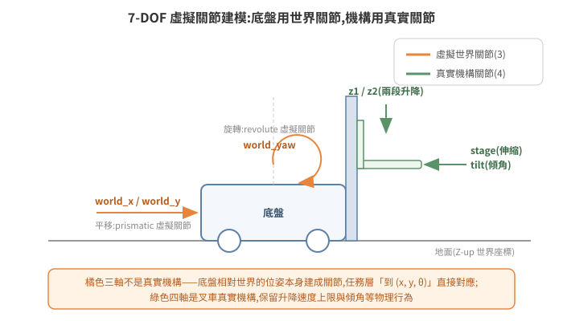

建立物理世界:Stage、模擬狀態與 Articulation
把模型放進場景只完成了一半——那是「佈景」,不是「世界」。要讓物體有重量、會碰撞、關節能受控,需要理解 Isaac Sim 的物理層(PhysX)怎麼跟場景層(USD)協作:什麼時候物理才真的在算、機器人的關節怎麼驅動、以及哪些操作會把物理引擎搞壞。
1. 物理世界的基本組成
一個能跑物理的場景,USD 裡至少要有:
- Physics Scene(一個 prim):定義重力方向與大小、solver 設定。習慣上重力
-Z9.81 m/s²,場景 Z-up。 - 地面:帶 collision 的靜態平面/幾何,否則物體會一路往下掉。
- 剛體(Rigid Body):要受物理影響的 prim 加上 rigid body + collision 屬性——沒有 collision 的 mesh 是「鬼魂」,會互相穿透。
- Articulation(關節樹):機器人本體——多個剛體用 joint 串起來,joint 可帶 drive(馬達)接受位置/速度目標。
GUI 裡這些都是右鍵選單的 Add → Physics;程式做法用 pxr.UsdPhysics API 或 isaacsim.core 的封裝。這些屬性都存在 USD 裡,隨場景檔走。
2. 模擬狀態:PLAYING 才有物理
場景載入 ≠ 模擬開始。 timeline 有三態:STOPPED / PLAYING / PAUSED。只有 PLAYING 時 PhysX 才逐步積分、關節才會動、TF 與 joint states 才對外發布。這是 headless 部署「一切正常但什麼都不動」的第一大根因,值得反覆強調:
| 症狀 | 根因 |
|---|---|
| 外部拿不到 TF / joint states | 模擬停在 STOPPED |
| 機器人不理會關節命令 | 同上 |
| 橋接程式回報 pose 無效 | 同上 |
控制方式三選一:GUI 按 Play、Python omni.timeline.get_timeline_interface().play()、或 ROS2 標準服務(simulation_interfaces/srv/SetSimulationState,見 05-ros2-bridge)。自動化部署把 play() 寫進 --exec 腳本,不留手動步驟。
3. 用虛擬關節驅動移動機器人:一種務實的建模法
直覺上,模擬堆高機應該模擬四個輪子的轉速與轉向。實戰採用的是另一種建模:給底盤三個「虛擬世界關節」world_x、world_y、world_yaw——底盤相對世界的平移與旋轉本身作為 prismatic / revolute joint,再加上叉車機構的真實關節(stage 伸縮、z1/z2 兩段升降、tilt 傾角),整台車就是一棵 7-DOF(DOF,degree of freedom,自由度)的 articulation。

為什麼這樣做?第一性原理:上游系統(車隊排程)給的是「走到世界座標 (x, y, θ)」層級的任務,不是輪速指令。如果模擬輪子,就得在中間自己實作一整套底盤運動學與輪速控制器,而這些對「驗證派工與物流流程」毫無貢獻。虛擬關節讓「位置命令 → 車到位」的鏈路最短,同時保留叉車機構的真實物理(舉升有速度上限、傾角影響棧板)。取捨也要誠實面對:這不是動力學擬真(不模擬輪胎打滑、慣性漂移),適合流程級模擬,不適合底盤控制器開發。
⚠ 關節的名字不保證它的世界軸向。 關節軸定義在 joint frame 局部座標,body 鏈上任何一層的 xformOp:orient 都會把它轉走。實測案例:一組命名 world_x/world_y 的虛擬關節,因根 prim 帶一個 orient 旋轉,實際各沿世界 −Y 與 −X——名字互換且帶負號。控制鏈自洽時完全無症狀,逐軸調參/除錯時才會炸;先讀 joint frame 與祖先旋轉,或用極端值實測哪個軸動(09 篇 §4有完整條目)。
4. 關節控制 API:兩種語意,別混用
對 articulation 下命令有兩條路,語意完全不同。注意:SingleArticulation 上沒有 set_joint_position_targets 這個方法(v5.1.0 原始碼證實)——該方法屬於批次操作的 Articulation view 類別。單一機器人的 PD(PD,比例-微分控制,靠剛度/阻尼把關節拉向目標)目標控制,要用 apply_action(ArticulationAction(...)):
from isaacsim.core.prims import SingleArticulation
from isaacsim.core.utils.types import ArticulationAction
robot = SingleArticulation("/World/MyRobot")
robot.initialize()
robot.set_joint_positions(...) # 瞬移(teleport):直接改狀態,不經 drive
robot.apply_action(ArticulationAction(joint_positions=...)) # PD 目標:交給 joint drive 用剛度/阻尼追
- PD 目標控制需要 joint 有 drive 增益(stiffness / damping)。對沒有 drive 的 joint 下
apply_action目標,什麼都不會發生——不報錯,就是不動。這是「命令發了車不動」的常見暗坑。 set_joint_positions是瞬移,但上游若以高頻率(如每個物理步)送密集軌跡點,逐點瞬移在視覺上是平滑的——流程級模擬完全夠用。- 官方已預告
Single*系列類別未來將移除、建議改用Articulationview 類別(單台機器人也傳長度 1 的路徑清單即可);且 6.0 起isaacsim.core.prims整組移至 experimental namespace——升版時關節控制路徑要重新驗證,不能假設不動。
透過 ROS2 bridge 發 JointState 命令時,實測出兩條重要規則:
- 只帶要控制的 joint:曾嘗試「發完整 joint 清單、不控制的填 NaN 遮罩」,實測會被 bridge 整包忽略。
- position 命令不要帶
velocity欄位:velocity=0.0不是「不指定」,會被當成明確的速度目標(hold),導致關節不動。位置與速度目標對同一 joint 混用還會讓 drive 抖動。
5. 兩條互斥的控制路徑:articulation vs 直改 xform
02 篇介紹過用 ScriptNode 直接改 prim 的 translate/orient——那是「非物理」的控制:繞過 PhysX 直接改場景樹。它與 articulation 控制互斥:
對一台由 PhysX articulation 管理的機器人直改 root xform,PhysX 的模擬 view 會失效,報
Simulation view object is invalidated,之後 joint states 回饋全部不可信,只能重載場景。
一個物件,一條控制路徑:要物理(碰撞、drive、joint 回饋)就走 articulation;要輕量位姿同步(例如把外部定位結果視覺化)就直改 xform、且該物件不掛 articulation。接手既有場景時,先弄清楚每個可動物件走哪條路,再動手加控制。
6. 物理互動不一定要擬真:幾何驅動吸附
叉車「叉起棧板」若走純物理(叉齒與棧板的摩擦與受力),對流程模擬是高成本低回報——PhysX 接觸求解對薄板穿插很敏感,失敗模式又難除錯。實戰的替代方案是幾何判定 + attach:
- 每個物理步檢查「叉架高度與棧板底面的距離」+「水平距離」,兩者都在門檻內 → 把棧板 attach 到叉架(隨叉架移動);
- 放下時(高度回落、位置在儲位內)→ detach,棧板落回世界。
這是「demo 級擬真」的誠實取捨:視覺與流程正確,物理細節簡化。文件與程式裡應明說這是吸附,不是真實叉取,避免後人誤以為可以拿來驗證叉取力學。
7. 除錯武器庫
| 症狀 | 檢查 |
|---|---|
| 什麼都不動 | 模擬是否 PLAYING(§2) |
| 命令發了、特定關節不動 | joint 有無 drive 增益;命令是否帶了 velocity=0.0;joint 名是否拼錯 |
Simulation view object is invalidated |
有東西直改了 articulation 的 xform(§5);重載場景 |
| 物體穿透 | collision 屬性缺失;mesh 太薄(改用近似碰撞體) |
| 位置有殘差 | 命令流結束 ≠ 物理到位(命令是非同步的);drive 增益不足;旋轉中心不在預期點,轉彎帶出平移 |
最後一列展開說:yaw 旋轉的中心不保證是你以為的參考點(例如 base_link)。純旋轉時鎖住 x/y joint 值,參考點的世界座標仍可能漂移。對策不是鎖 joint,而是「hold 世界座標點、每個控制週期重新投影回 joint 目標」。
8. 延伸閱讀
- 官方文件:Isaac Sim Physics、Articulations、
isaacsim.coreAPI - 下一篇:05 ROS2 橋接